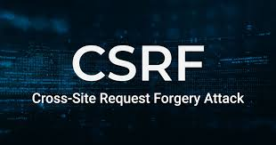

Cross-site Request Forgery - Intro

Cross-site request forgery (also known as CSRF) is a web security vulnerability that allows an attacker to induce users to perform actions that they do not intend to perform. It allows an attacker to partly circumvent the same origin policy, which is designed to prevent different websites from interfering with each other.
What is the impact of a CSRF attack?
In a successful CSRF attack, the attacker causes the victim user to carry out an action unintentionally. For example, this might be to change the email address on their account, to change their password, or to make a funds transfer. Depending on the nature of the action, the attacker might be able to gain full control over the user's account. If the compromised user has a privileged role within the application, then the attacker might be able to take full control of all the application's data and functionality.
How does CSRF work?
For a CSRF attack to be possible, three key conditions must be in place:
-
A relevant action. There is an action within the application that the attacker has a reason to induce. This might be a privileged action (such as modifying permissions for other users) or any action on user-specific data (such as changing the user's own password).
-
Cookie-based session handling. Performing the action involves issuing one or more HTTP requests, and the application relies solely on session cookies to identify the user who has made the requests. There is no other mechanism in place for tracking sessions or validating user requests.
-
No unpredictable request parameters. The requests that perform the action do not contain any parameters whose values the attacker cannot determine or guess. For example, when causing a user to change their password, the function is not vulnerable if an attacker needs to know the value of the existing password.
For example, suppose an application contains a function that lets the user change the email address on their account. When a user performs this action, they make an HTTP request like the following:
"POST /email/change HTTP/1.1
Host: vulnerable-website.com
Content-Type: application/x-www-form-urlencoded
Content-Length: 30
Cookie: session=yvthwsztyeQkAPzeQ5gHgTvlyxHfsAfE
email=wiener@normal-user.com "
This meets the conditions required for CSRF:
-
The action of changing the email address on a user's account is of interest to an attacker. Following this action, the attacker will typically be able to trigger a password reset and take full control of the user's account.
-
The application uses a session cookie to identify which user issued the request. There are no other tokens or mechanisms in place to track user sessions.
-
The attacker can easily determine the values of the request parameters that are needed to perform the action.
With these conditions in place, the attacker can construct a web page containing the following HTML:

If a victim user visits the attacker's web page, the following will happen:
-
The attacker's page will trigger an HTTP request to the vulnerable web site.
-
If the user is logged in to the vulnerable web site, their browser will automatically include their session cookie in the request (assuming SameSite cookies are not being used).
-
The vulnerable web site will process the request in the normal way, treat it as having been made by the victim user, and change their email address.